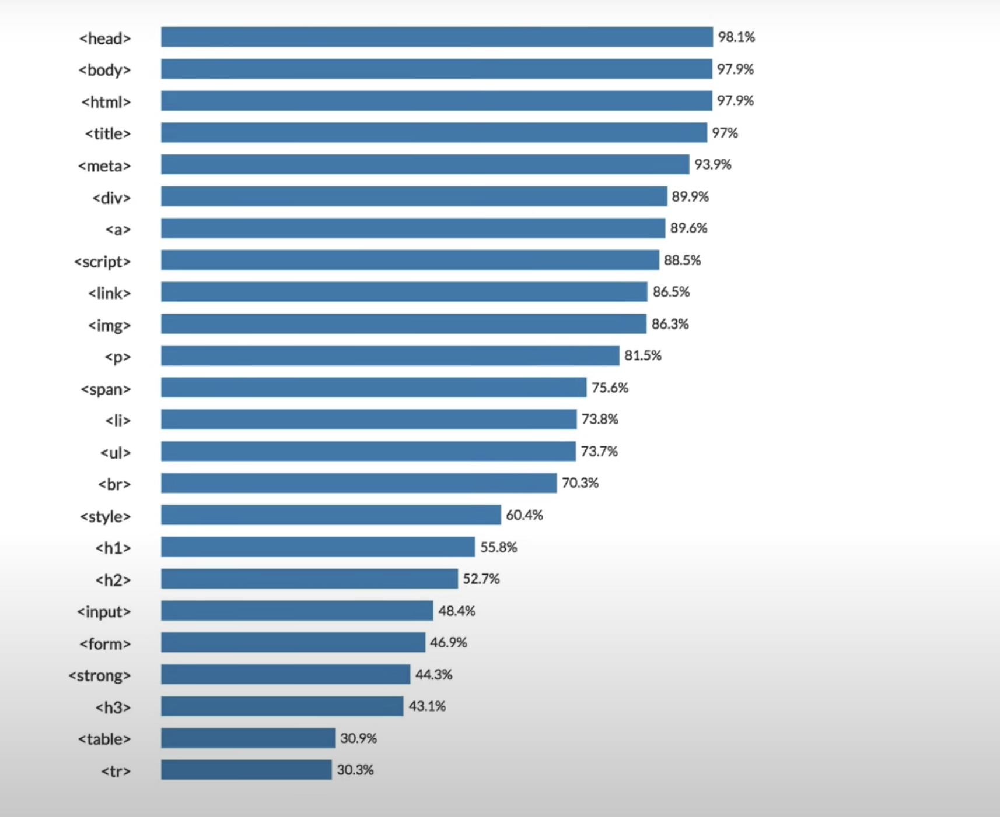

이미지 [source(src) width(크기)]:속성이라고한다 코드의 앞뒤 위치는 상관없다
이미지 [source(src) width(크기)]:속성이라고한다 코드의 앞뒤 위치는 상관없다(pr)paragraph:뜻절, 단락 위단락. 단락(段落)은 특정한 요지나 아이디어를 다루는 글쓰기에서, 글을 내용상 끊어서 구분한 하나하나의 토막을 가리킨다. 문단(文段)이라고도 한다.
margin 대각선으로떨어짐 margin-top:위에서부터 떨어진다 css의 한종류이다
스테이크 이미지 [source(src) width(크기)]:속성이라고한다 코드의 앞뒤 위치는 상관없다
